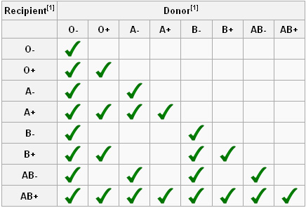

why donate blood
BLOODLINE

what blood type is most needed?
All blood types are needed.
Common blood types are needed because there are many patients with them.
Less common blood types are needed because there are fewer donors to give them.
However, people with O- blood are particularly in demand because they are the "universal donor."
It means that people of all blood types can receive O- blood safely, so it is used during
life-threatening emergencies or when the matching blood type is in short supply.
AB types are universal recipients. This relationship is reversed for plasma products.
AB type plasma can be transfused to all patients, while O- types are the universal plasma recipients.
Therefore, all types are really needed!
